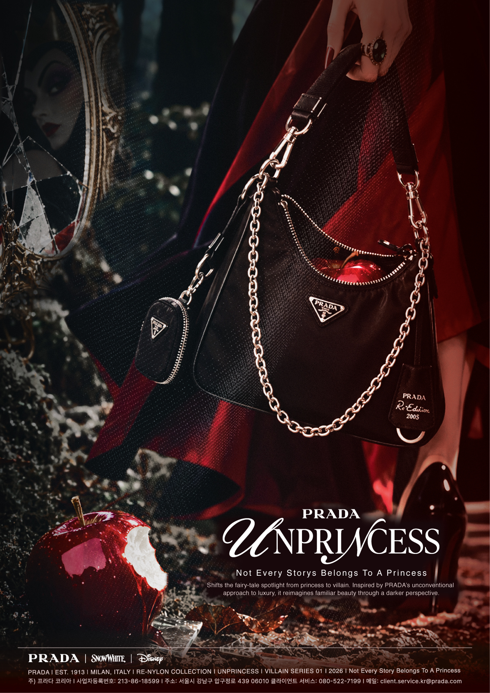
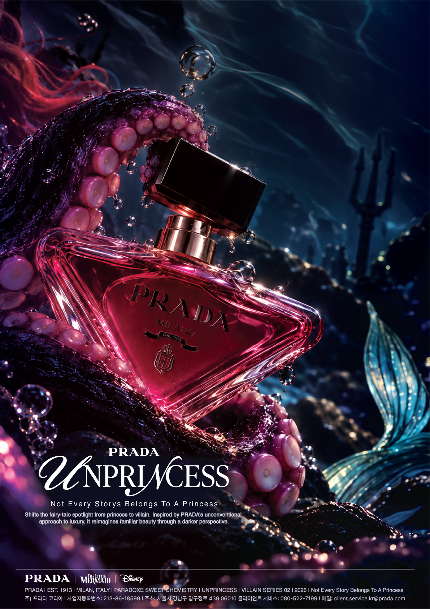

overview
실용작인 나일론을 럭셔리의 상징적 소재로 재해석해온 PRADA의 태도에서 착안하여, 백설공주의 독사과와 깨진 거울을 빌런의 시선으로 재궁성하고 리나일론 백과 결합해 시각화했다. "Not Every Story Belongs to a Princess"라는 메시지를 통해 익숙한 서사를 뒤집고, 관습에 얽매이지 않는 새로운 아름다움을 제안하고자 했다.

overview
서로 상반된 감각과 정체성의 공존을 의미하는 PRADA 패러독스에서 착안하여, 인어공주의 물거품과 지느러미, 우슐라의 촉수를 재구성하고 패러독스 스위트 케미스트리 향수와 결합해 시각화했다. "Not Every Story Belongs to a Princess"라는 메시지를 통해 빌런의 시선으로 익숙한 서사를 뒤집고, 하나의 정의되지 않는 새로운 아름다움을 표현하고자 했다.